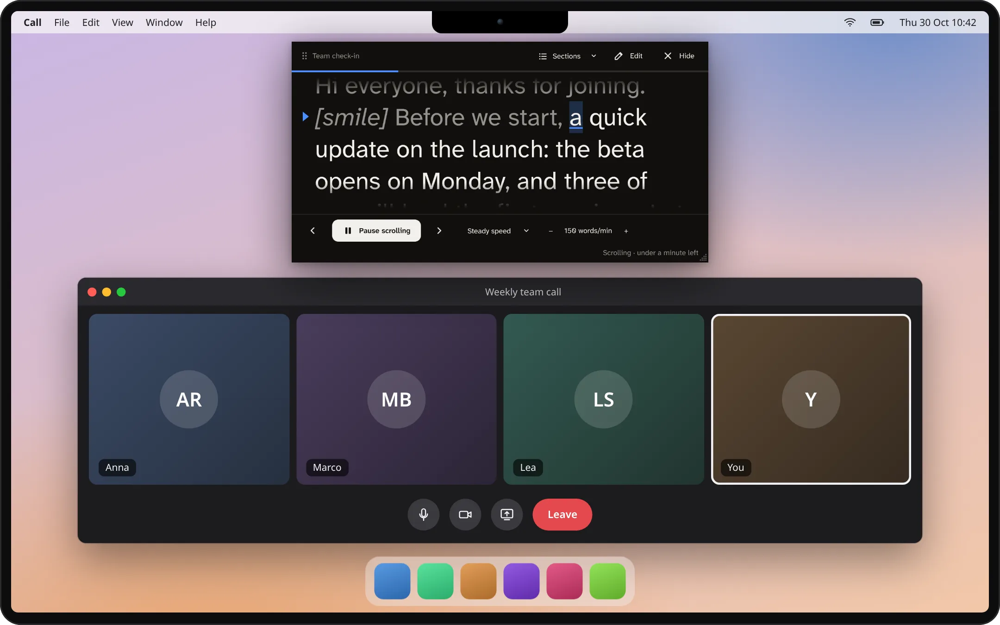
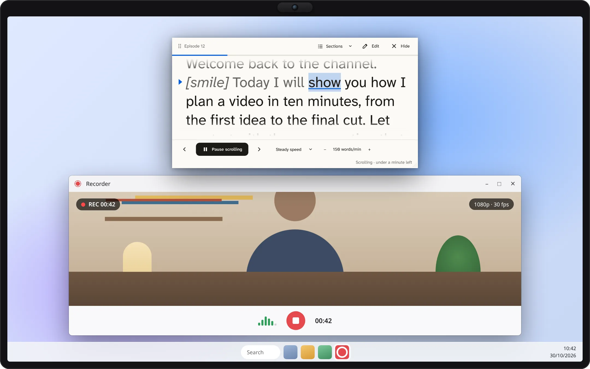
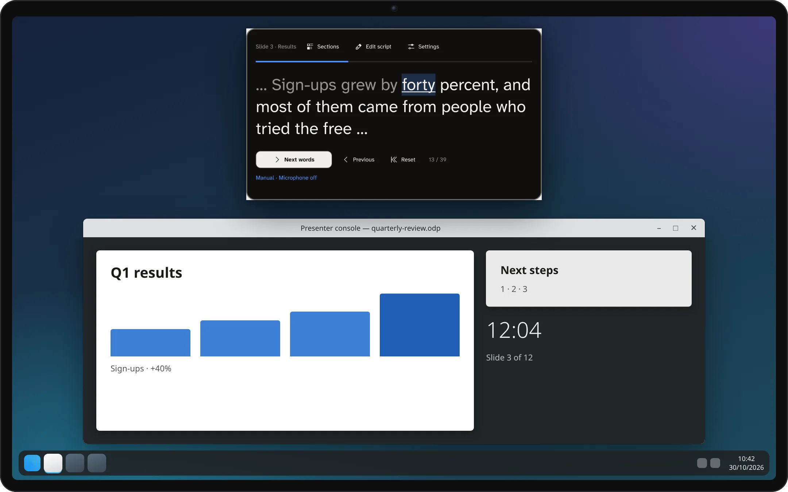
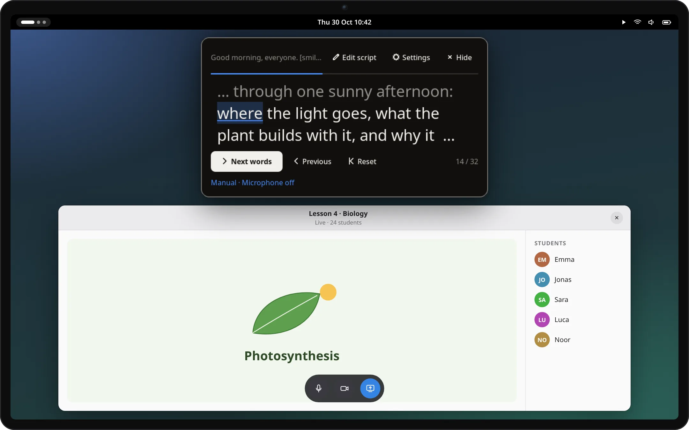

A teleprompter for your desktop. Put a small reader next to your webcam and speak: Kalipso follows your voice with speech recognition that stays on your computer, scrolls at a steady pace, or waits for your pedal.
Linux (KDE Plasma and GNOME), with Windows and macOS previews. No account, no cloud.
Opening remarksVoice following · demo
Thank you all for being here. [smile] Today I want to share one simple idea. A teleprompter should follow you, not the other way round. Speak at your own pace, pause when you need to, and pick up again. The line you are on stays right here, at the same height.
165 words/min
A demonstration of voice following: the current word is marked, words already said fade, and your line stays at the same height.
Three ways to keep your place
You speak. The script keeps up.
Follow your voice
Words you have said fade, and the line you are on stays at the same height. Recognition runs on your computer, with Moonshine, Vosk or the system's own.
321
Scroll at a steady pace
Choose the words per minute, start after a countdown, and see how much time is left. Faster or slower while you read.
Step by hand
Arrow keys, a foot pedal, a presentation clicker or your phone. Each key can do what you choose.
Try the reader
See how your place is kept.
This is the reader from the app, in your browser. Advance a few words, change the colors or mirror it for teleprompter glass, then edit the script. The browser version never records audio or saves your script.
Sample script
A little preparation makes room for a better conversation. Take your time. Leave space for a pause.
Manual demo · Microphone off
Changes appear immediately. [Bracketed cues] are shown but never read. This demo resets on reload; the desktop apps save your script.
In real use
Right under your camera, on top of any app.
On a call, while recording, while presenting: the reader stays where your eyes should be, on Linux, Windows and macOS.

On a video call · macOSThe reader sits just under the camera, so you keep eye contact while you talk.

Recording a video · WindowsSteady scrolling at your speed while you record, in light colors here.

Presenting slides · KDE PlasmaThe Plasma widget keeps your notes, one section per slide; step with a clicker or the arrow keys.

Teaching online · GNOMEThe GNOME extension opens from the top bar, on top of any app.
Simulated desktops and apps, drawn for illustration. The Kalipso windows in them are real captures of the current version.
Private by design
Your words stay on your computer.
No account, no cloud. Scripts are plain text files in your own folder.
Speech recognition runs locally. Audio never leaves your computer and nothing is recorded.
The phone remote never sees your script. It only sends start, pause and step, over your own network.
Open source under the AGPL. Read the code, build it yourself, check what it does.
What else it does
Made for the way you present.
Speaker notes and documents
Import notes from PowerPoint and Impress, one section per slide, or Word, Writer and Markdown documents.
Follows Impress live
Present with LibreOffice Impress and the reader jumps to the notes of the slide on screen. Linux, for now.
Mirror for glass
Flip the text horizontally or vertically for a beam-splitter teleprompter. The controls stay readable.
Easier reading
Any font you have, including ones made for dyslexia, with wide line spacing and lines that fade at the edges.
Sections and cues
Lines starting with # are sections you can jump to; [cues] like [smile] are shown but never read.
How it went
After a voice session: pace, long pauses and time per section, saved as a report if you want one.
Install
Try the preview. Know what to expect.
Kalipso is still in development: you build it from source for now. Signed installers and store listings are not available yet.
Linux app
Debian 13, Ubuntu 24.04 or newer · build from source
The full app: script library, imports, a movable and mirrorable reader, phone remote and voice following.
A reader on your desktop or panel that keeps your script between sessions. Voice following uses a separately installed companion. A KDE Store listing is planned.
Kalipso is a separate reading window; it does not need to be embedded in a particular meeting app. Window placement and capture behavior vary by desktop. Test your actual call or recording setup before relying on it.
Will others see it when I share my screen?
On Windows the standalone app asks the system to leave the reader out of screen shares and recordings, and KDE Plasma 6.6 or later can hide it too. macOS offers no reliable way for an app to do this, so share a single window there. In every case, check the view from another participant, or the recorded video, before your presentation.
Can it read PowerPoint or Impress notes?
Yes. The standalone app imports the speaker notes of .pptx and .odp files, one section per slide. On Linux it can also follow a LibreOffice Impress slideshow while you present, moving to the notes of the slide on screen.
Which languages can it follow?
The download catalog has Moonshine models for English, German, Spanish, Japanese and Chinese, and Vosk models for those plus Italian. Recognition quality differs by language and model. Manual and steady reading work in any language.
Is my script saved automatically?
Yes. The standalone app, the Plasma widget and the GNOME extension save your script and reading position on your computer as you type. Nothing is uploaded. Only this browser demo resets when you reload it.
Is it ready for an important live presentation?
This is a development preview. Recognition can lose your place, and real-device testing is incomplete. Keep a copy of your notes, learn the manual controls and rehearse on your own hardware first.
Help make the next version better.
Tell us what worked, what did not, and what you need for your next talk or recording.